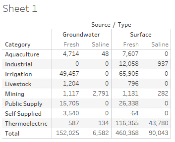
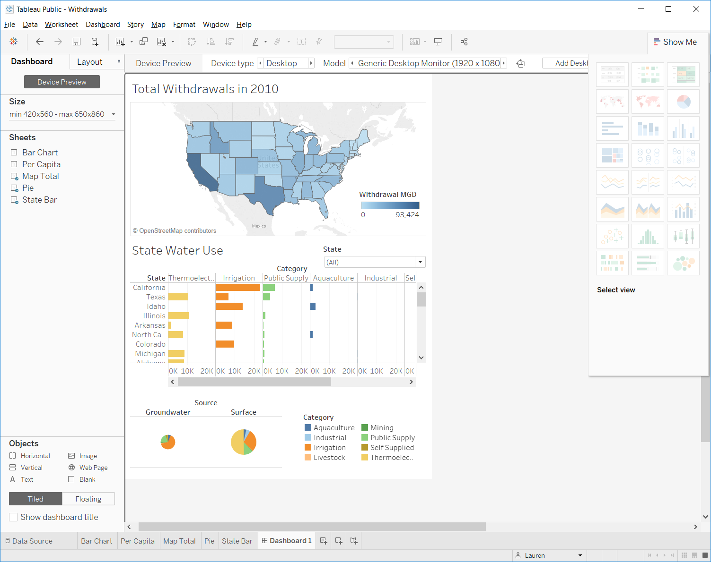

Unit 3: Part 1 - Visualizing Data in Tableau
Unit 3: Part 1 - Visualizing Data in Tableau♦ USGS Water Use data, an overviewObtaining the data & spreadsheet etiquette♦ Tableau Exercises1. Loading data into Tableau2. Joining tables♦ Navigating Tableau♦ Working with worksheetsThe Data pane:3. Constructing a visualization3a: Organizing our data3b: Plotting our data4. Derived fields: Plot per capita water withdrawals.EXERCISE: Recreate the charts shown on the USGS website1. Bar chart: https://water.usgs.gov/watuse/wuto.html 2. Pie Chart: https://water.usgs.gov/watuse/wuto.html . 3. Bar chart by state and category.Exercise: Plot only the top 10 statesDashboardsStoryboards
Here, we test drive Tableau with some water use data pulled from the USGS servers. We'll examine how to get data into a Tableau session, how to best organize our data, and how to construct various plots and charts with our data. We'll also examine Tableau's "dashboard" and "storyboard" features.
♦ USGS Water Use data, an overview
The USGS collects and reports water use on 5-year intervals. The latest data released was from 2010. Go to the USGS Water Use website (https://water.usgs.gov/watuse/). Notice they provide some overviews of the data. Click on the different overviews. What do you notice? Is this information helpful? Would this information be more engaging if we could explore different state water use?
Obtaining the data & spreadsheet etiquette
From the USGS website, download the state data for 2010.
- Download and examine the Formatted tables, Excel .xlsx format. Based on what we have learned in previous sessions, is this type of spreadsheet particularly usable? Why or why not?
This is a frequent problem with water data. You might be able to discover the data, but the data are not in a format that is immediately usable. How would you reorganize the data to be more usable?
- Download and examine the unformatted version Excel format. How does this format compare to the previous one? Better? Worse?
While this latter format is better suited for data analysis, we have further modified it to provide a good working example for learning Tableau. This is saves as the file called State_Data_Formatted.xlsx.
- Download a local copy of the
State_Data_Formatted.xlsxworkbook, and examine its contents.
♦ Tableau Exercises
We'll start exploring Tableau's analysis environment by making a simple plot with our water use data. Specifically, we'll construct a simple stacked bar plot of water withdrawals by category, limiting our data to fresh water withdrawals only. In doing so, we'll cover some basics such as: reading data in, joining tables, setting up plots, and manipulating plots.
Then we'll see if we can mimic some of the USGS' exploratory products.
1. Loading data into Tableau
Tableau accepts several data formats, including Excel spreadsheets. You can also connect to remotely served data such as Google Sheets. However, to keep it simple, we'll just load in our local Excel spreadsheet.
- Open Tableau
- Select
Microsoft Excelunder theConnectmenu. Navigate to where the data are held.
On the left-hand side we see that we are connected to the
State_Data_Formatted.xlsxspreadsheet. Underneath the connection you see bothworksheets. Drag theWaterUsesheet into the panel labelled "Drag sheets here".Make sure the data loaded into Tableau correctly:
Data Column Headers
Data Types
- Geographic types are pre-loaded into Tableau
2. Joining tables
We want to connect data in our WaterUse worksheet with the data in the Population worksheet. We do this by joining the two tables.
Drag the population sheet into the top right region of the workspace.
Types of joins...
Select the fields to link too:
State- Linking population and water use data together will allow us to calculate the per-capita water use later on.

♦ Navigating Tableau
The bottom row of the Tableau workspace contains tabs for the different objects you've created as well as links to create new objects.
Data Source- the raw data we load into TableauWorksheet- spreadsheets where we create visualizations to explore the dataDashboard- organize visualizations onto a page. Can set up connectivity and interaction of different charts.New Story- organize dashboard(s) in an order to walk users through the analysis
♦ Working with worksheets
 Worksheets
Worksheets
The Data pane:
- Dimensions are discrete data. These set the level of detail in your visualization.
- Measures are continuous data. These values will be aggregated for each level in your selected dimension(s), and you specify how they are aggregated (mean, max, count, etc.).
- Italicized variables are calculated by Tableau on the fly.
- You can change how data are categorized, i.e. dimension or measures by dragging or by right clicking the variable and selecting the operation you want to perform.
3. Constructing a visualization
3a: Organizing our data
Let's begin our visualization exercise by plotting fresh water withdrawals by water use category. The first step in doing this is structuring our data into a table that computes the sum water withdrawal for each category (e.g. Aquaculture, Irrigation, etc.) and for each type (Fresh vs Saline). Let's explore how this is done in Tableau.
Drag
Withdrawal MGDinto the main area of the sheet. What do you see?→ Tableau will always reduce data to a summary. You can then ask it to break out that information into categories.
Drag
Sourceinto theColumns"shelf".→ You can think of columns as your x-axis and rows as your y-axis in terms of how the data will be displayed.

Add
Typeas a second column header.
Drag
Categoryinto theRowstab.
3b: Plotting our data
As we configure the way the data are shown in our sheet, you will noticed in the "Show Me" area on the left, Tableau recommends different plotting options, with its top recommendation given a red border.
Create a
stacked barchart by clicking the outlined plot option in the "Show Me" area.- How did Tableau organize the information?
- How did Tableau order the data in the bar chart?

→It's a little hard to see - what if we flipped the orientation...
- Use
Ctrl-Wor theSwap Rows and Columnstool to transpose the data. The stacked bar plot will update...

→ Notice that Total is making the Withdrawal axis very long. Remove the Total column.
Right-Click on
Totalin the chart and clickexcludeNow try some more modifications:
► Let's focus only on freshwater. Can you exclude the entire Saline category?
► Can you sort the column data from descending to ascending?
→ At present our plot's name is "Sheet1". Renaming the sheet will rename the plot...
- Rename your worksheet (by clicking on it's current name "Sheet1" in the lower left corner) to something more meaningful like "Water Withdrawals".

4. Derived fields: Plot per capita water withdrawals.
Duplicatethe worksheet you just created and rename it "Per Capita Withdrawals"- Right click on the sheet in the lower bar and select
Duplicate, then rename it
- Right click on the sheet in the lower bar and select
Under
Measures, click onWithdrawal MGD. Select the dropdown arrow on the right side and from the dropdown menu, selectCreate>Calculated Field:- Name this calculated field
Per Capita (MGD/person) - Calculate the per-capita water use (mgd/person) as
[Withdrawal MGD]/[Population](You can type or drag fields into the box...) Then clickOK.
- Name this calculated field
Drag
Per Capita (MGD/person)field into the columns chart and removeSUM(Withdrawal MGD).

EXERCISE: Recreate the charts shown on the USGS website
1. Bar chart: https://water.usgs.gov/watuse/wuto.html
Let's explore more of Tableau by attempting to recreate the USGS figure shown here:

In Tableau, create a new worksheet and title it
Total Water Use, 2010Drag
Stateinto the worksheet. Voila! A map!Let's create a color map based on
Withdrawal MGDby dragging the field on top of thecoloricon in the Marks window.- You can click on colors to edit.
- The USGS used
Steppedcolor, meaning the colors are broken into discrete categories. Tableau naturally uses acontinouscolor range. What are the pros / cons of using each. Look at the USGS map for comparison.
► There's not a right or wrong answer. Pick the one you want to use.

► Let's only look at freshwater totals.
- Use the
filtersbox to excludeSaline.
►How does the fresh water map change if you look at per capita withdrawals?
- Drag your derived "
Per Capita (mgd/person)" field onto theColorsection in the ~window.

2. Pie Chart: https://water.usgs.gov/watuse/wuto.html .
Next, we'll tackle the pie chart shown here:

Create a new worksheet and rename it "Pie Chart"
Add the
Withdrawal MGDdata to the workspace.Set
Categoryto be the rows.- Exclude the
Totalcategory
- Exclude the
Convert your result to be a Pie chart
- Optional: reorder your fields and color them to match the USGS figure..

Some modifications:
Filter it to only look at
freshwaterSet
Sourceto be a column
What other charts might convey this information better than a pie chart?
3. Bar chart by state and category.
Finally, we'll tackle this one: https://water.usgs.gov/watuse/east-west-2010.html

Create a new worksheet, rename it
State Water UseDrag the
Withdrawal MGDfield into the Rows shelf.→ Note that instead of the table (with one value) we'd get if we dragged the field into the table area of the sheet, we get a bar plot if we drag the value field into the Rows shelf...
Next, we want to create plot "facets" for each water use category, that is, create a series of subplots of water withdrawal, one for each category.
- This is done by dragging the
Categoryfield into the Rows shelf. (It will default to the left ofWithdrawal, which is fine).
- This is done by dragging the
Now we want not just one bar for each category, but bars reflecting the withdrawal in each state.
- Do this by dragging the
State1column into the Columns shelf.
- Do this by dragging the
Exclude the Total category from the Water Use facets.
Filter records for
Freshtype only...
If you look at the USGS figure, the states are sorted from west to east. We could replicate this by sorting our states based on longitude. We have longitude as a calculated field, but alas, it cannot be used to sort our data. Nor can it be set as a dimension, or even extracted into a non-calculated field. So close... but this is why we might use scripting - to get beyond the limitations of GUI-based plotting applications...
Still, we'll take a quick look at sorting columns and rows to see how it could be done...
To sort the water use categories by
Total Withdrawals, click theCategoryitem in the Rows shelf, and select Sort... to open the sorting dialog window.- Select "Sort by Field" and explore the options.
Exercise: Plot only the top 10 states
Duplicate the
State Water Usesheet to a new sheet calledTop 10Right-click the
State1(in your Rows shelf) and select "Filter..." from the dropdown menu. SelectTopand set to sort by the Top 10 states ranked by sum of Withdrawal...
To improve our chart, let's color the bars by water use categories:
- Drag the
Categoryfield (from the left hand Data panel) onto the Color box in the Marks area.
- Drag the
Next, let's transpose our plot:
- Click the Transpose button (Right below the "Map" menu label...)
Finally let's sort the usage categories from largest used to smallest.
- From the dropdown menu in the
Categoryitem in the Columns shelf, select sort. - Sort by Field in descending order.
- From the dropdown menu in the
Lastly, sort the states in descending order of the most used category (Irrigation).

► To go back to the USGS chart (first duplicate the above sheet):
Remove the Top 10 State filter
Transpose the rows and columns
Sort on -- well, if we had a longitude column we could do it...
Dashboards
Now that we've created the data visualizations, we can organize the visualizations onto a dashboard.
Add a
Dashboardsheet- Notice that instead of seeing your data on the left-hand side, you now see the data visualizations you have created.
Add your
Total Water Use, 2000map to the dashboard by dragging it over.Add in the
Pie Chartand the"Top 10" State Water Usecharts.- Notice you can undock and delete some of the legends.
- You can also change legends from full lists to drop down menus.
Rearrange these three plots however you would like.
Notice that the Map and the State Water Use bar charts could be linked together by state.
Click on the state map. Click on the bottom arrow and click
use as filter.Click on a state. What happens to the bar chart and the pie chart?
Why does the bar chart not seem to work correctly?
- Go to the
State Barworksheet and turn off theTop 10 filter.
- Go to the
Now try selecting multiple states.
Save the workbook
- Sometimes you will get an error saying it failed to saved the workbook. Click
open from Tableau Public. This will let you sign in and you will see an older version of your workbook. Close that and then try to save your workbook again.

Storyboards
A storyboard allows you to merge together multiple dashboards or charts to progressively lead a reader through a process of understanding their data.
Storyboard is similar to the dashboard, except you can also include dashboards. Each caption box at the top represents an html page. Arrange your plots and captions, add text, and tell a story about the data. Here's one example: